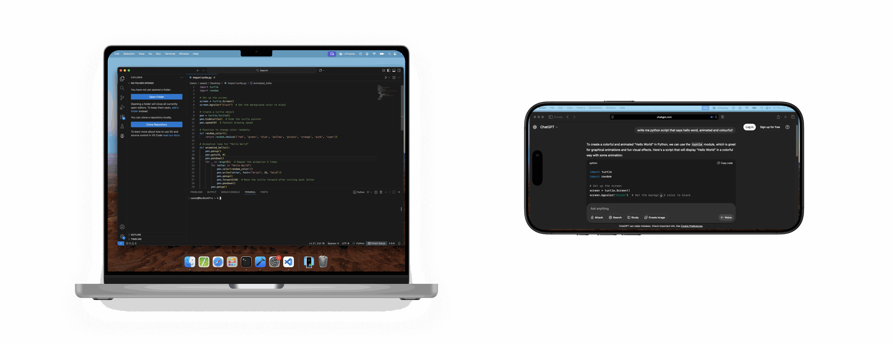
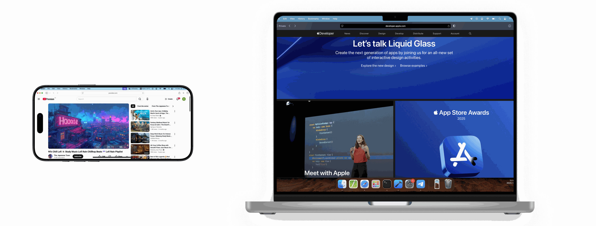
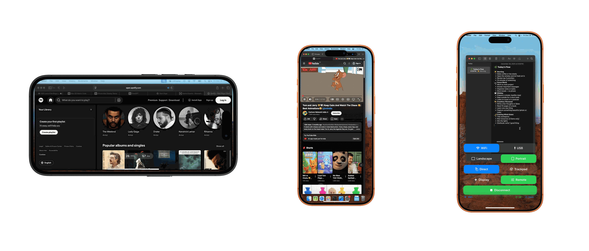
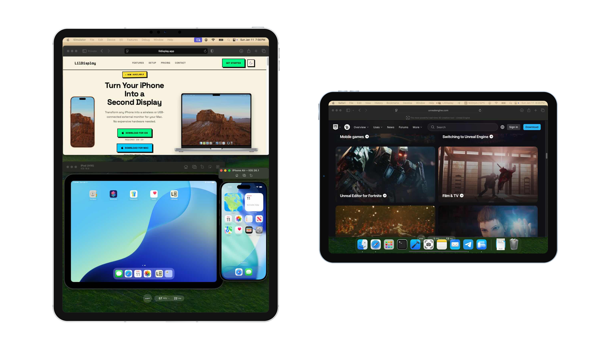
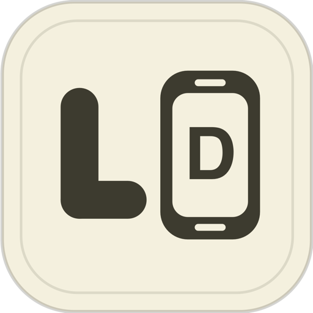

Display
A real extra screen. Drag windows onto it.
Your iPhone or iPad becomes a real extra screen for your Mac, or a big trackpad. Over USB or WiFi.
Device to device. Nothing leaves your devices. Privacy
Switch any time in the iPhone menu.
A real extra screen. Drag windows onto it.
The extra screen, plus touch, gestures and typing.
No extra screen. The whole phone is a Mac trackpad.
Extends your desktop, like any monitor.
Tap, scroll, and 13 Mac trackpad gestures.
Under 10 ms on USB. WiFi needs no router.
Scan the QR code once, then just tap Connect.
Keep working with your MacBook shut.
A precise pointer on iPad.




Pay once. No subscription.
3 free sessions, no card needed. Local prices are set by the App Store.
A real extended display: macOS sees a new screen you can drag windows onto. Prefer mirroring? Turn it on in System Settings › Displays.
Sidecar needs an iPad on the same Apple ID. LilDisplay also works with iPhone, with any Apple ID, and adds trackpad gestures and typing.
No. WiFi mode connects peer-to-peer, straight between your devices. USB works too and is fastest.
Yes. Turn on Advanced › Keep Awake When Lid Is Closed in the LilDisplay menu on your Mac.
No. 3 free sessions, then a one-time unlock that covers your iPhone and iPad. The Mac app is free.
None. The picture and your touches go directly between your devices. Nothing passes through a server.
A Mac with macOS 14 or later, and an iPhone or iPad with iOS or iPadOS 15.6 or later.
More answers on the Support page.
Questions? support@lildisplay.app · Support
✎ This note is yours. Click and type.
On your iPhone: WiFi › Scan.
Only needed once, the iPhone remembers this Mac.
